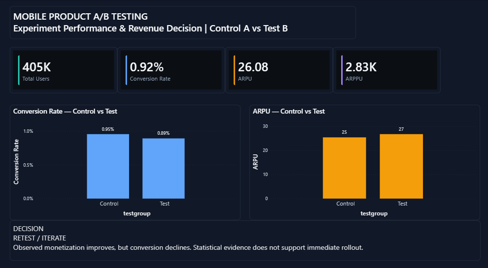
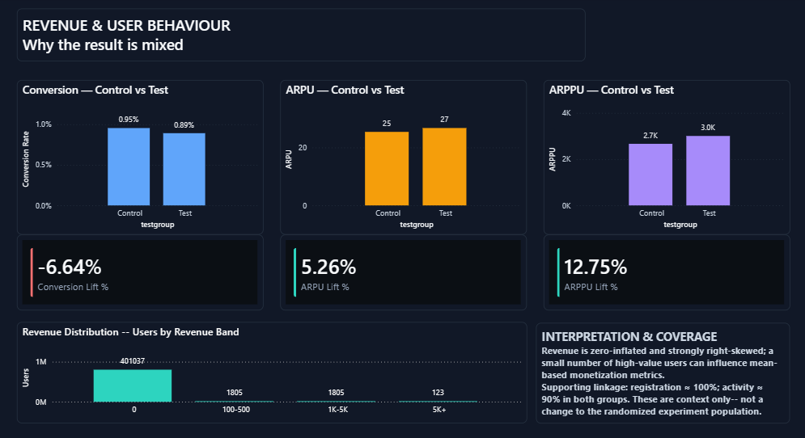
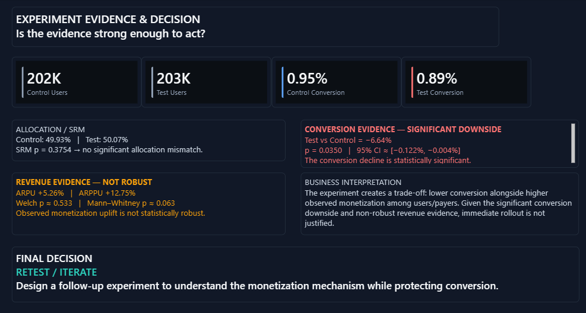

An end-to-end experiment analysis evaluating whether a mobile monetization treatment should be rolled out without compromising conversion.
RETEST / ITERATE
Test B shows higher observed monetization but a statistically significant conversion decline. The monetization evidence is not statistically robust enough to justify immediate rollout.
The product team needs to determine whether a monetization treatment creates enough incremental value to justify rollout while protecting the conversion funnel. The analysis therefore evaluates conversion, ARPU, ARPPU, experiment allocation, statistical evidence, and revenue distribution together rather than optimizing a single KPI.
Measures the breadth of monetization across the randomized experiment population.
Measures total monetization per experiment user and captures both payers and non-payers.
Measures monetization intensity among users who pay.
| KPI | Control | Test | Interpretation |
|---|---|---|---|
| Users | 202,103 | 202,667 | Balanced allocation |
| Conversion | 0.954% | 0.891% | -6.64%; statistically significant |
| ARPU | 25.41 | 26.75 | +5.26%; not statistically robust |
| ARPPU | 2,664.00 | 3,003.66 | +12.75% observed |
Control: 49.93% · Test: 50.07%
SRM p = 0.3754 → no significant allocation mismatch.
Test vs Control = -6.64%
p = 0.0350 · 95% CI approximately [-0.122%, -0.004%]
The conversion decline is statistically significant.
ARPU +5.26% · Welch p ≈ 0.533 · Mann–Whitney p ≈ 0.063.
Revenue is zero-inflated and strongly right-skewed, so the observed monetization uplift is treated as directional rather than definitive.



Check experiment grain, population, allocation, and supporting linkage.
Calculate conversion, ARPU, ARPPU, and relative lifts.
Evaluate significance using conversion testing, Welch's test, and Mann–Whitney sensitivity analysis.
Balance statistical evidence, monetization upside, and conversion risk.
Python · SQL · Power BI · DAX · A/B Testing · Product Analytics · Statistical Testing · Revenue Analytics
This independent portfolio case study uses the public Gamelytics: Mobile Analytics Challenge dataset available through Kaggle.
The underlying third-party dataset remains subject to its respective owner and platform terms. This portfolio claims ownership only of the original analysis, SQL, Python work, dashboard design, interpretations, and case-study presentation.